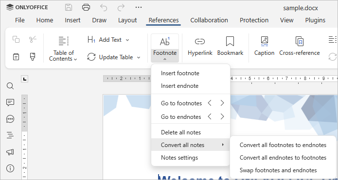

Konvertovanje fusnota i krajnjih napomena
ONLYOFFICE Document Editor omogućava brzo konvertovanje fusnota u krajnje napomene, i obrnuto, npr. ako primetite da neke fusnote u dokumentu treba da budu smeštene na kraju. Umesto da ih ručno pravite kao krajnje napomene, iskoristite odgovarajući alat za jednostavnu konverziju.
- Kliknite strelicu pored Fusnota ikone na kartici Reference u vrhu alatne trake,
- Pređite mišem preko opcije Konvertuj sve napomene i izaberite jednu od opcija sa desne strane:

-
- Konvertuj sve fusnote u krajnje napomene - sve fusnote se pretvaraju u krajnje napomene;
- Konvertuj sve krajnje napomene u fusnote - sve krajnje napomene se pretvaraju u fusnote;
- Zameni fusnote i krajnje napomene - sve krajnje napomene se pretvaraju u fusnote, a sve fusnote u krajnje napomene.